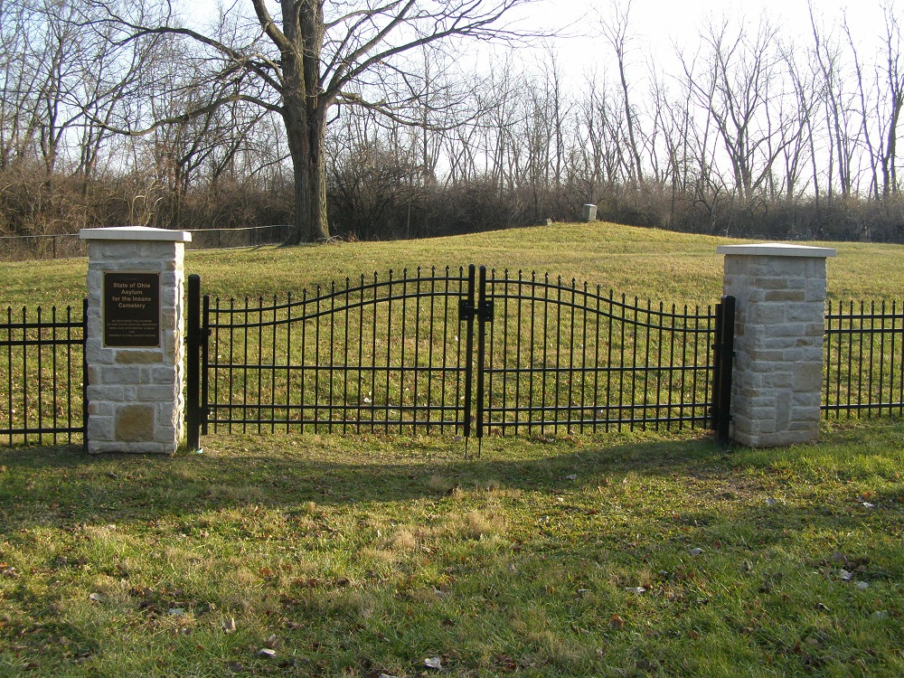
The largest and coolest of the remaining asylum cemeteries is also the hardest to find: the one near the intersection of Harper and McKinley just past I-70. It's technically known as the State Old Insane and Penal Cemetery, or in some listings the Columbus Municipal Cemetery, since it includes other burials which fell to the state. To get to this one you actually have to drive up a dirt path and park, then walk back along the freeway until you come to a grassy clearing.
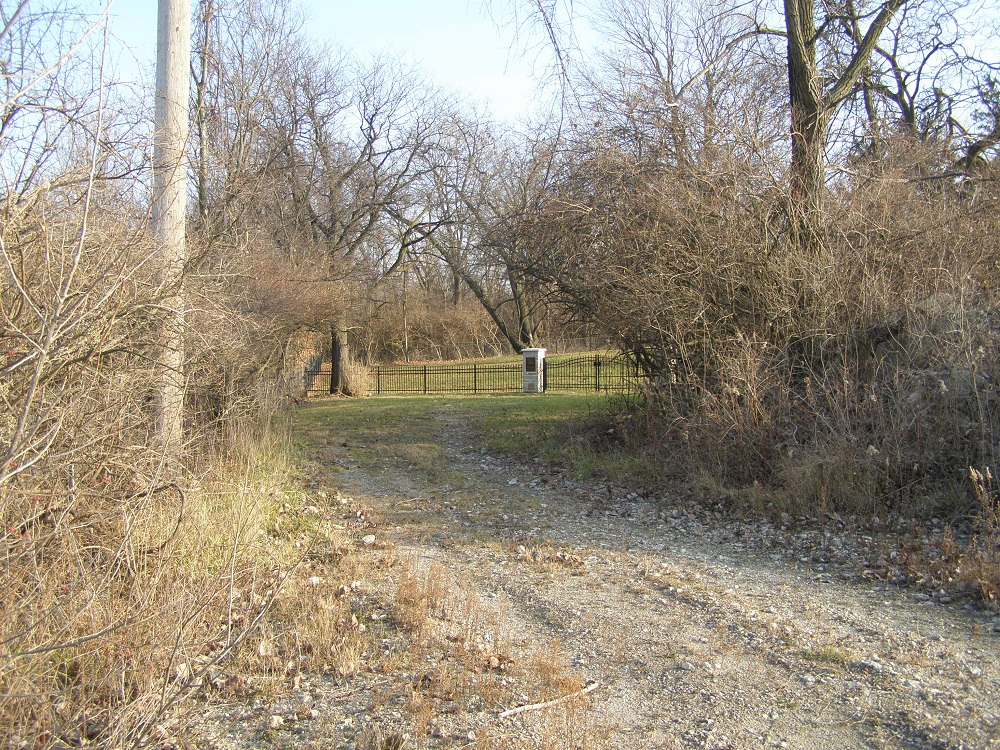
Until not long ago, you could tell you were in the right place because several of the graves became visible in the ridiculously long grass. Now, though, the city took the time to erect a fence around the whole thing. It's nice but not the big sturdy wrought-iron perimeter fence it deserves, and is in fact a little bit wobbly. Still, the effort is commendable. I first saw the new fence when I visited with my friends the Capertons, about whom I literally cannot say enough good things. We had a good time exploring the place, and poking around a little in the woods on the far side as well.
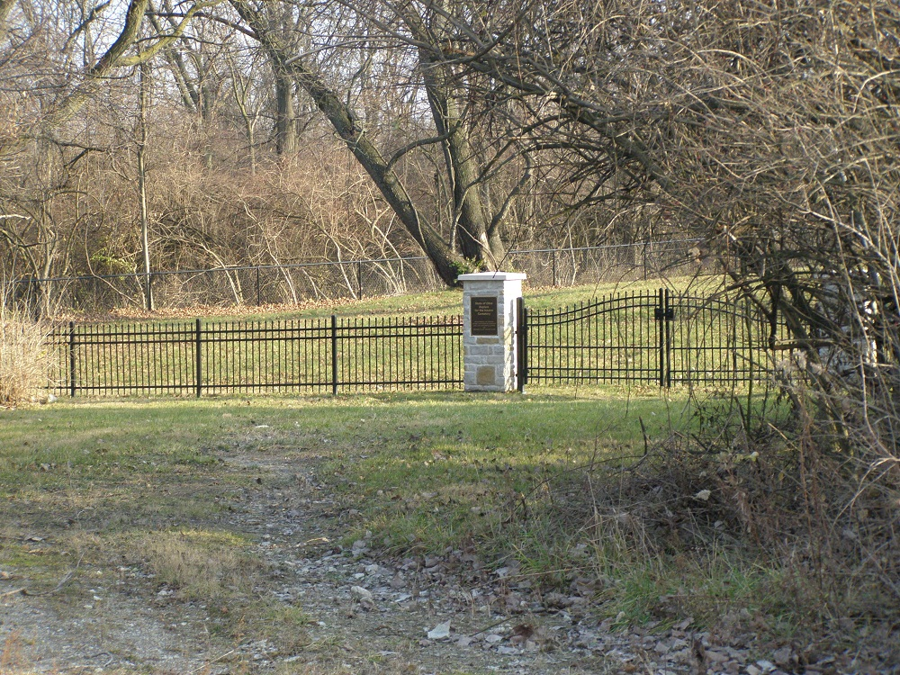
Beside the swinging gate doors are foundation columns, and the one on the left bears a metal sign visible here. The earnest, almost apologetic inscription comes as close as any official entity ever will to acknowledging, much less expressing any regret or God forbid admitting any responsibility for the immeasurable suffering inflicted by the mental health profession on the countless misunderstood, nightmarishly mistreated men and women they were supposed to help. It's pictured below.
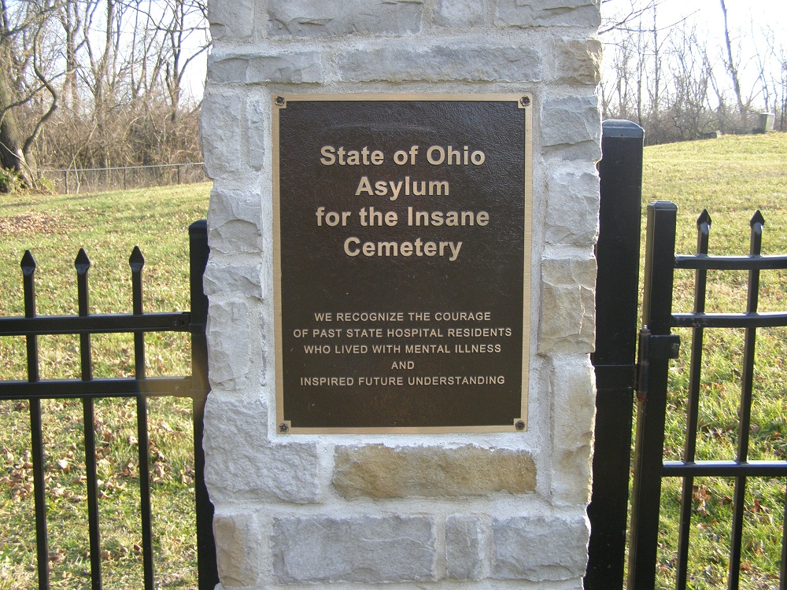
The message in raised letters reads:
State of Ohio
Asylum
for the Insane
Cemetery
WE RECOGNIZE THE COURAGE
OF PAST STATE HOSPITAL RESIDENTS
WHO LIVED WITH MENTAL ILLNESS
AND
INSPIRED FUTURE UNDERSTANDING
The first part, at least, is certainly true in most cases: People did (and do) live with mental illness, which is no small thing at all. I've always hated backslapping assholes who tell people suffering depression or anxiety to buck up, stop acting like that, be a man or an adult or whatever. Anyone with an ounce of empathy--and anyone who has even glimpsed the real thing in a friend or relative--knows that it's every bit as real as any injury or disease easily seen on the outside, and just as crippling. There's nothing easy or lazy about being sick this way.
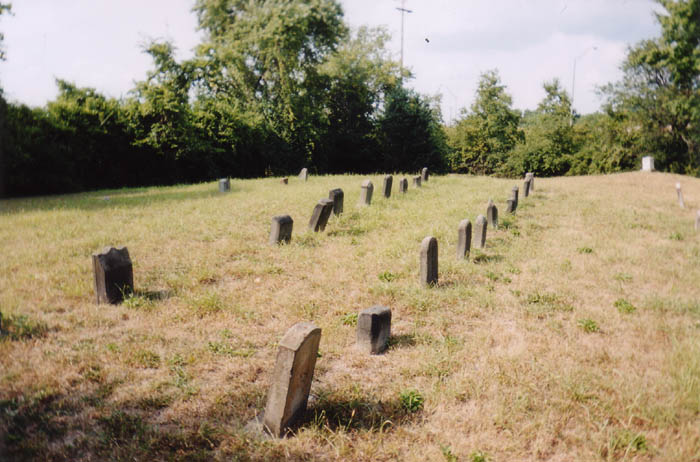
I've been lucky enough to dodge the psychiatric-disorder bullet so far (as far as I know, that is), but it runs thick in my family; actually, my trips to the Columbus Asylum cemeteries are always occasions to keep an eye out for the resting place of my great uncle, Charles Henderson, who finished his life in the state hospital because, after years of treatment for major depression and related miseries, his family back in Belmont County couldn't find a room where he could stay and be assured of the attention he required. With nowhere to "go home" to, his discharge was withheld and he just never left. (Because my dad had me so late in life my great uncle died before I was born, probably in the early 1960s.) They say he was buried by the state somewhere on the hospital grounds. So far I've had no luck spotting Great Uncle Charles, but it's still possible.
My Great Uncle Charles? Almost certainly.
The graves themselves: Many of them arranged in a wide circle around a center stone which says "THE COL. ASYLUM" and something else either worn or chipped into illegibility. The grave circle is sort of weird, and it reminds me of the similar graveyard behind the Ridges in Athens.
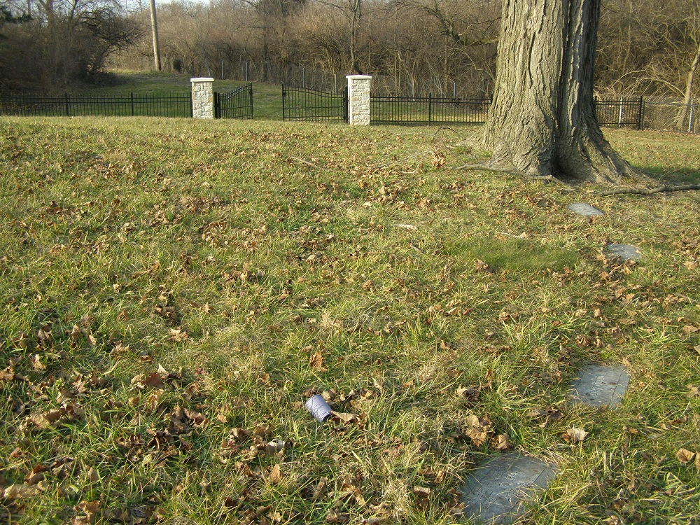
However, while the Athens circle is almost surely a thoughtless rearrangement job pulled by pranksters in the Roaring Twenties in between goldfish swallowing and flagpole sitting, while the Columbus circle is that way for a reason. The graves which ring the center stone belong to patients at the Asylum, while the ones lined up in more ordinary rows belong to inmates at the Old Ohio Penitentiary.
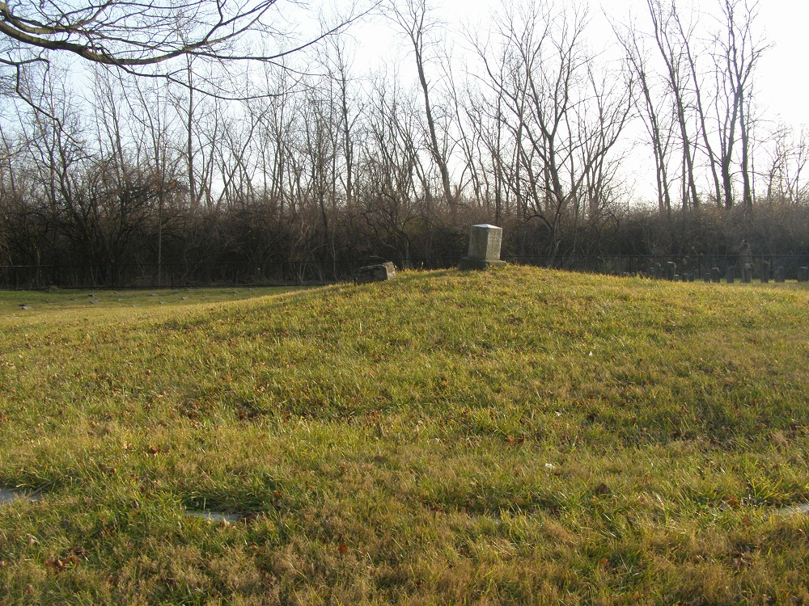
This cemetery is full of blackish-hued stones which might be my favorite tombstones anywhere (and I've seen a lot of them; I wonder what the favorites are of Beth Santore, my friend and the owner of the amazing website Grave Addiction). I don't know whether they were like this originally or not, but today the oldest of the upright type are black. Many of the inmate stones are quite ornately carved, with things like angels, birds, and trees designed around the names and death dates--the result of who knows how much hard work and focus, and in every way unique works of art every one.
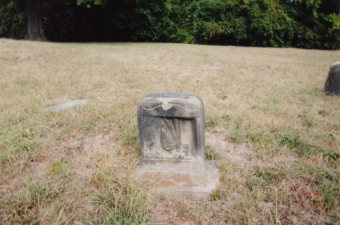
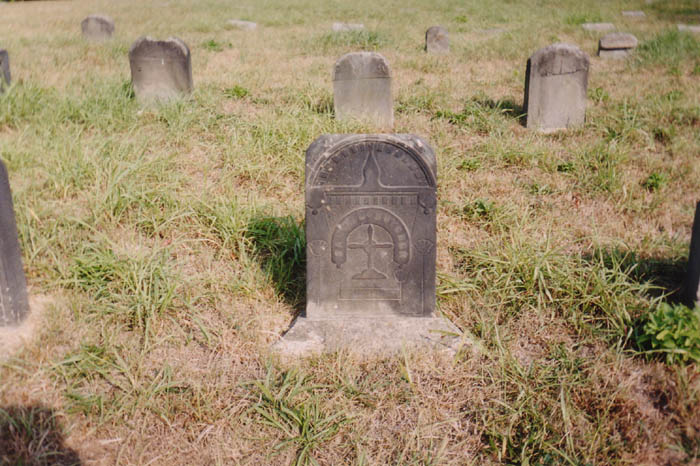
The writing is also different--thinner, and more like handwriting, obviously also a result of that personal touch.
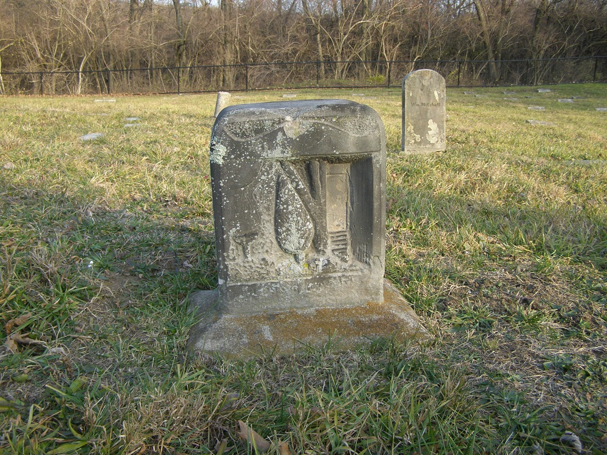
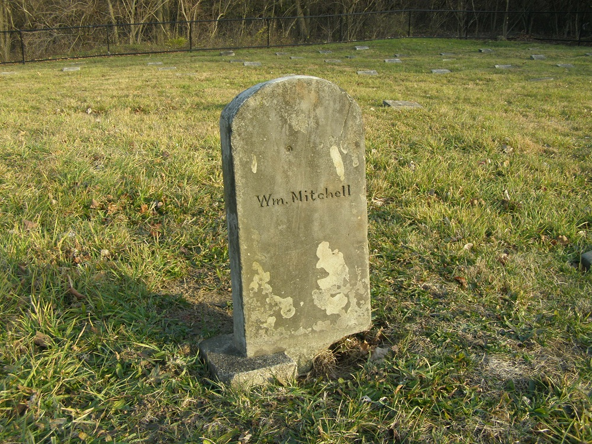
Of the three cemeteries, this one was used first. Its graves date back to the nineteenth century and don't go past the 1950s. The Developmental Center cemetery is the intermediate one, and the TICO cemetery is the most recent. This one is so old, in fact, that it predates the Hilltop Asylum. The oldest graves--those in the big circle--have death dates in the 1840s, 1850s, and 1860s, and belonged to patients who lived in the original State Institute for the Feebleminded. There are Unknowns in the circle, as well as a number of broken or missing stones, or stones with question marks for names or dates. (click here for Rootsweb's list of the inscriptions).
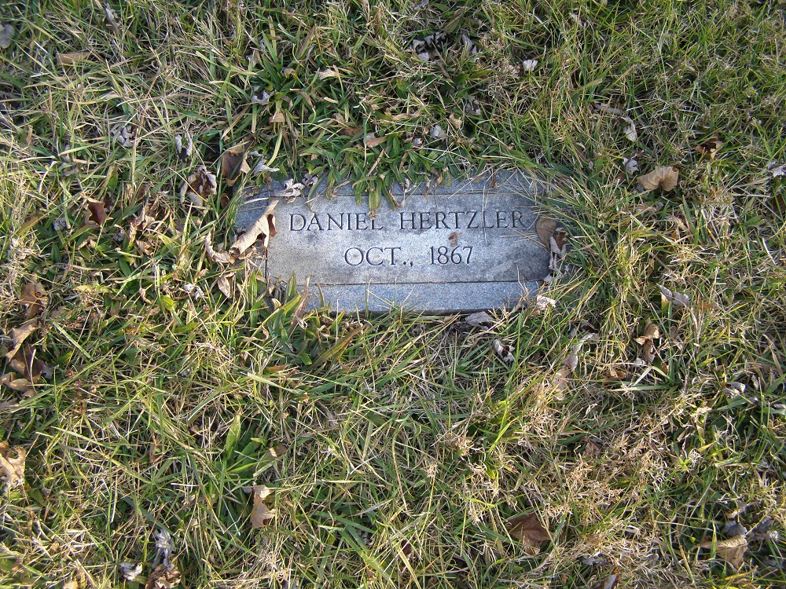
Especially intriguing to me in this circle is the grave shown above, apparently that of Daniel Hertzler, who died in October, 1867. This is odd, since the Daniel Hertzler House at George Rogers Clark State Park in Clark County has a ghost story about its namesake--a guy named Daniel Hertzler, who is supposed to have been murdered by thieves on October 16, 1867. The name and the date have to be more than a coincidence--especially since I only took note of the Hertzler name after doing work on my Clark County Hauntings, and since no one else has ever mentioned to me that Hertzler was buried in Columbus. And if he died in Clark County, defending his home against intruders, why would he be buried here in an asylum/penal cemetery? There is obviously more to the story than we know so far.
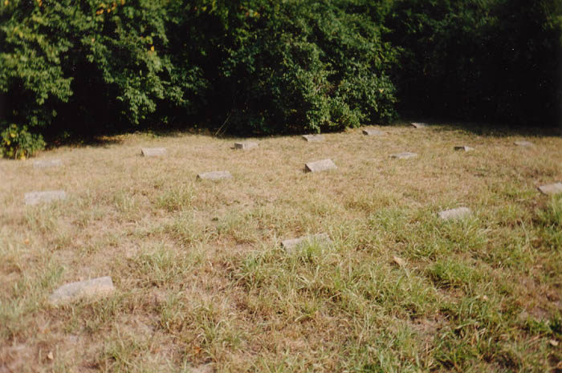
A row or two of the prisoner graves had disappeared into the woods at the edge of the clearing. By pushing through you could see them. The fence-builders cleared some foliage to include them, though, so now you can peruse them comfortably.
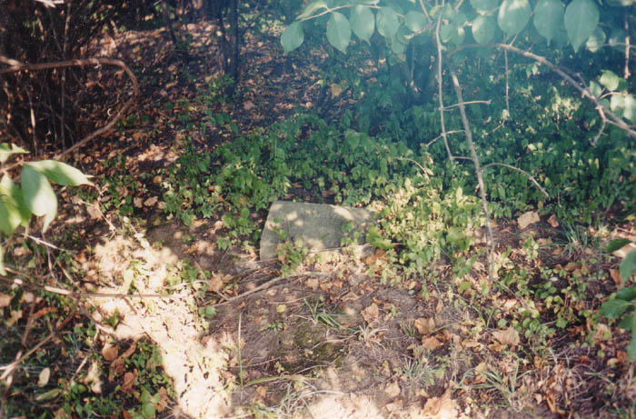
Several of the prisoner gravestones here have incomplete inscriptions--people for whom they had no birthday, or no last name, or no first. The saddest part of this cemetery is the section of "Unknowns." There are rows and rows of these anonymous stones in the back corner.
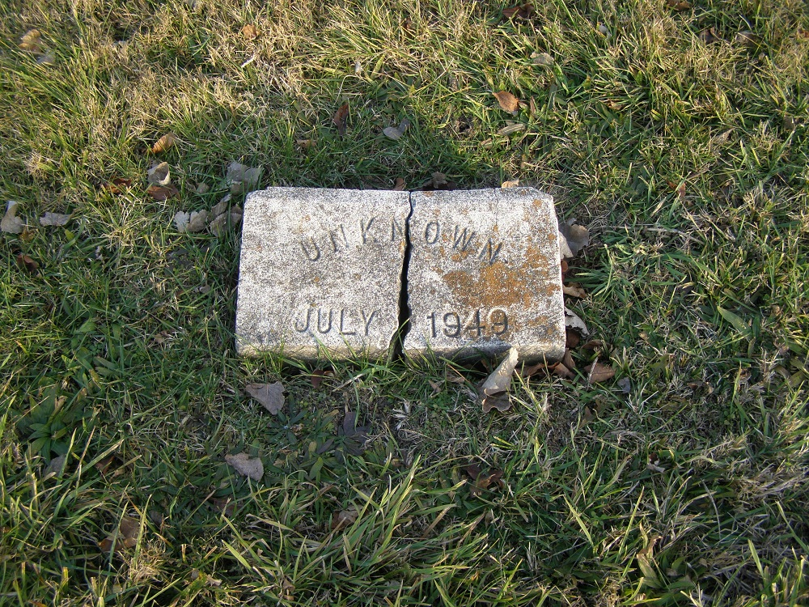
Most of these Unknowns are the charred bodies of victims of the Ohio Penitentiary fire of Easter Monday, 1930. 322 people lost their lives in the fire, which was set as part of an escape attempt by three prisoners. The candle they left in a pile of oily rags failed to ignite until after dinner, when they had planned to escape in the panic, and instead erupted when the convicts were back in their cells. Smoke inhalation killed most of the victims and injured upwards of 130 others. It remains America's worst prison fire.

Pictured above are the rows of caskets laid out for viewing at the state fairgrounds after most of the bodies were recovered. Many of the victims of the fire were burned beyond recognition, and were buried under anonymous tombstones in this very graveyard. Others were interred in mass graves at Evergreen and Eastlawn Cemeteries in Columbus.
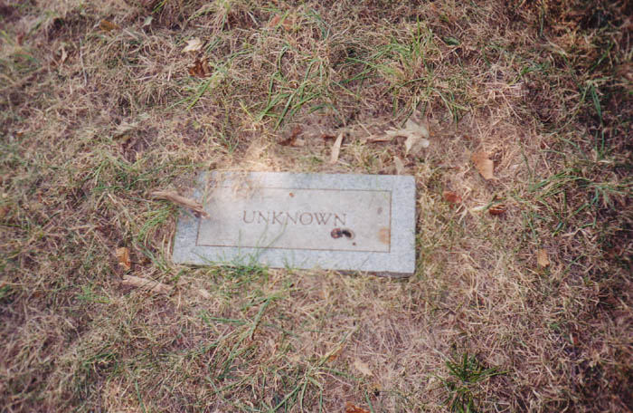
As with the other cemetery at the Developmental Center, I believe this was a city cemetery; they probably would have buried transients and other John Does they found, which might account for a few more of the unknowns.
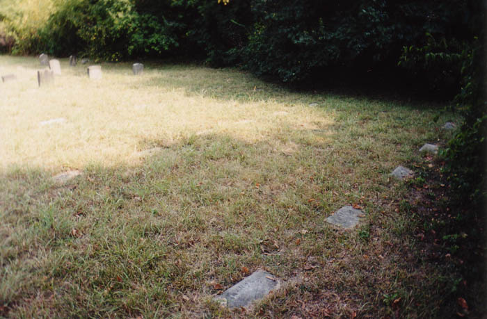
For a long time I'd say this was not a good place to visit alone, especially at night; there really were homeless people who lived in the woods just off the cemetery, always visible but never more than that. Still, I prefer that to the way they were clearly hauled out of here in paddywagons or whatever, since their encampments are heartbreaking now that I've had a chance to go back and take a look. I know it's shocking, but the powers that be don't always treat the homeless with humanity, which is a shame because they're in more need of kindness than almost any group of people. Go try to sleep outside with no money just one night and see if you can tell me they live that way because they're lazy.
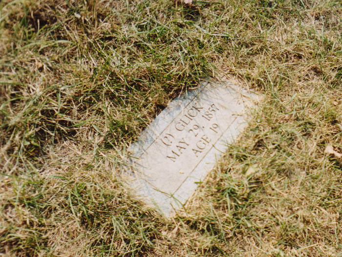
Special thanks to my ex Kate for showing me how to reach this cemetery. Without her information I would not have found it. And to my onetime teacher and longtime friend without equal, Mr. Dave Caperton (do you know how hard it is to call a teacher by his first name, even when you had him for Study Hall once and he left teaching after your freshman year, and you're 33 now?), and his wife Mrs. Susanna Caperton, and of course to Alex, their son, who has somehow managed to surprise me by being amazing even though I expected nothing less from parents like his.
It was on my outing with the Capertons that I collected a bunch of new pictures, and I thought I'd post some here. Enjoy.
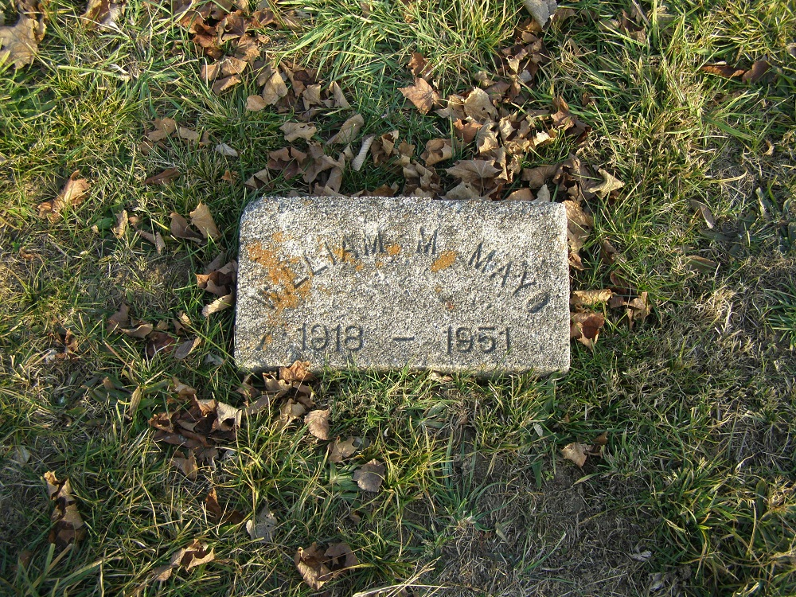
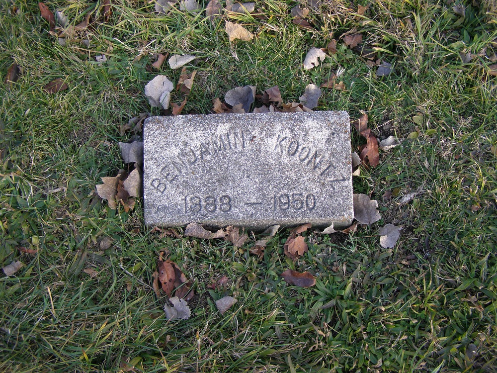
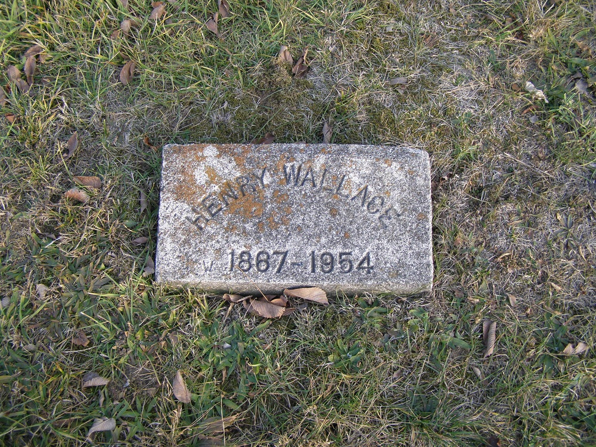
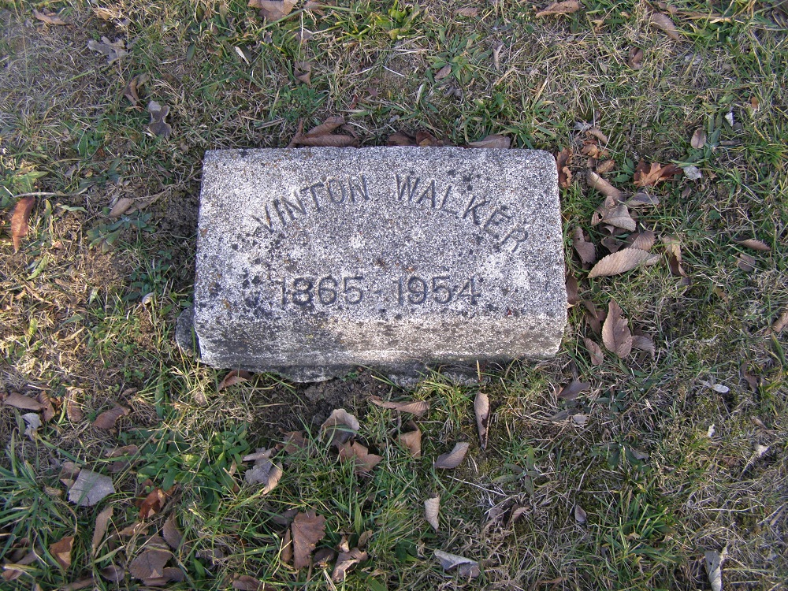
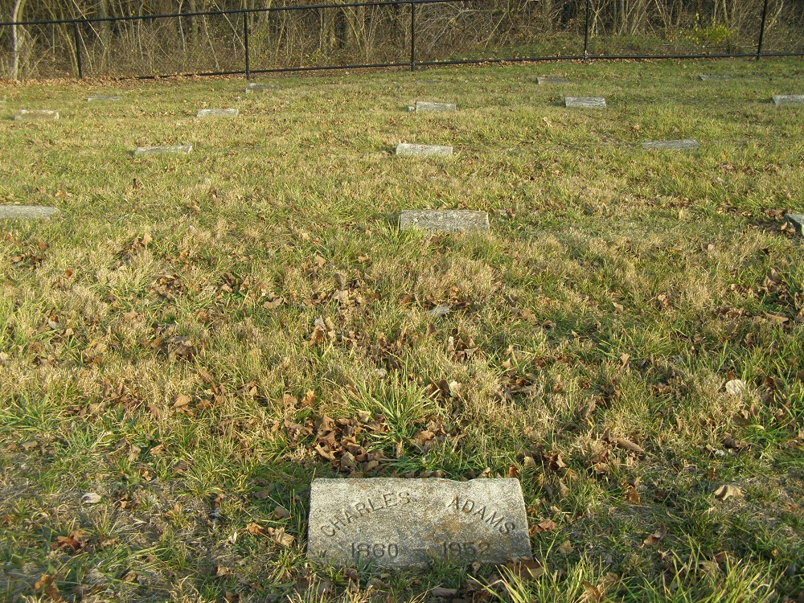
Click below to continue to investigate the other cemeteries left to mark the place where the Columbus Hospital stood for more than a century.
TICO Cemetery
Columbus Developmental Center Cemetery
Rootsweb: State Old Insane and Penal Cemetery
The Old Ohio Penitentiary
"Inside the Pen" by David Lore
Back
Sources
Lore, David. "Inside the Pen." The Columbus Dispatch. October 28, 1984.{kind=link}
{kind=link}
{kind=link}